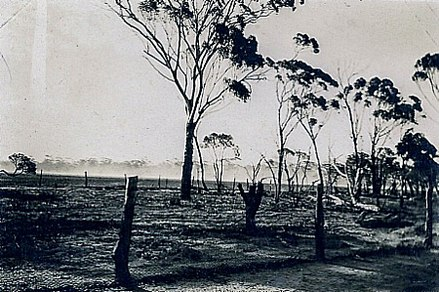
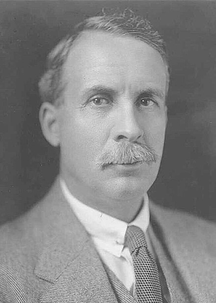

"If we had a military division with the bullet-carrying capacity of these birds it would face any army in the world... They can face machine guns with the invulnerability of tanks. They are like Zulus whom even dum-dum bullets could not stop.”
Following World War I, large numbers of discharged veterans who served in the war were given land by the Australian government to take up farming within Western Australia, often in agriculturally marginal areas. With the onset of the Great Depression in 1929, these farmers were encouraged to increase their wheat crops, with the government promising—and failing to deliver—assistance in the form of subsidies. In spite of the recommendations and the promised subsidies, wheat prices continued to fall, and by October 1932 matters were becoming intense, with the farmers preparing to harvest the season's crop while simultaneously threatening to refuse to deliver the wheat.
The difficulties facing farmers were increased by the arrival of as many as 20,000 emus. Emus regularly migrate after their breeding season, heading to the coast from the inland regions. With the cleared land and additional water supplies being made available for livestock by the Western Australian farmers, the emus found that the cultivated lands were good habitat, and they began to foray into farm territory—in particular the marginal farming land around Chandler and Walgoolan. The emus consumed and spoiled the crops, as well as leaving large gaps in fences where rabbits could enter and cause further problems.

Farmers relayed their concerns about the birds ravaging their crops, and a deputation of ex-soldiers were sent to meet with the Minister of Defence, Sir George Pearce. Having served in World War I, the soldier-settlers were well aware of the effectiveness of machine guns, and they requested their deployment. The minister readily agreed, although with conditions attached: the guns were to be used by military personnel, troop transport was to be financed by the Western Australian government, and the farmers would provide food, accommodation, and payment for the ammunition. Pearce also supported the deployment on the grounds that the birds would make good target practice, while it has also been argued that some in the government may have viewed the operation as a way of being seen to be helping the Western Australian farmers, to stave off the secession movement that was brewing. Towards that end, a cinematographer from Fox Movietone was enlisted.
NOVEMBER 2, 1932 - FIRST ATTEMPT
On 2 November the men travelled to Campion, where some 50 emus were sighted. As the birds were out of range of the guns, the local settlers attempted to herd the emus into an ambush, but the birds split into small groups and ran so that they were difficult to target. Nevertheless, while the first fusillade from the machine guns was ineffective due to the range, a second round of gunfire was able to kill "a number" of birds. Later the same day a small flock was encountered, and "perhaps a dozen" birds were killed.
NOVEMBER 4, 1932 - AMBUSH
The next significant event was on 4 November. Meredith had established an ambush near a local dam, and more than 1,000 emus were spotted heading towards their position. This time the gunners waited until the birds were in close proximity before opening fire. The gun jammed after only twelve birds were killed and the remainder scattered before any more could be shot. No more birds were sighted that day.
In the days that followed, Meredith chose to move further south, where the birds were "reported to be fairly tame", but there was only limited success in spite of his efforts. By the fourth day of the campaign, army observers noted that "each pack seems to have its own leader now—a big black-plumed bird which stands fully six feet high and keeps watch while his mates carry out their work of destruction and warns them of our approach". At one stage Meredith even went so far as to mount one of the guns on a truck, a move that proved to be ineffective, as the truck was unable to gain on the birds, and the ride was so rough that the gunner was unable to fire any shots. By 8 November, six days after the first engagement, 2,500 rounds of ammunition had been fired. The number of birds killed is uncertain: one account estimates that it was 50 birds, but other accounts range from 200 to 500, the latter figure being provided by the settlers. Meredith's official report noted that his men had suffered no casualties.
Summarising the culls, ornithologist Dominic Serventy commented:
The machine-gunners' dreams of point blank fire into serried masses of Emus were soon dissipated. The Emu command had evidently ordered guerrilla tactics, and its unwieldy army soon split up into innumerable small units that made use of the military equipment uneconomic. A crestfallen field force therefore withdrew from the combat area after about a month.
NOVEMBER 8, 1932 - DISCUSSION
On 8 November, members in the Australian House of Representatives discussed the operation. Following the negative coverage of the events in the local media, that included claims that "only a few" emus had died, Pearce withdrew the military personnel and the guns on 8 November. After the withdrawal, Major Meredith compared the emus to Zulus and commented on the striking manoeuvrability of the emus, even while badly wounded.
NOVEMBER 13, 1932 - SECOND ATTEMPT
After the withdrawal of the military, the emu attacks on crops continued. Farmers again asked for support, citing the hot weather and drought that brought emus invading farms in the thousands. James Mitchell, the Premier of Western Australia lent his strong support to renewal of the military assistance. At the same time, a report from the Base Commander was issued that indicated 300 emus had been killed in the initial operation.
Acting on the requests and the Base Commander's report, by 12 November the Minister of Defence approved a resumption of military efforts. He defended the decision in the Senate, explaining why the soldiers were necessary to combat the serious agricultural threat of the large emu population. Although the military had agreed to lend the guns to the Western Australian government on the expectation that they would provide the necessary people, Meredith was once again placed in the field due to an apparent lack of experienced machine gunners in the state.
Taking to the field on 13 November 1932, the military found a degree of success over the first two days, with approximately 40 emus killed. The third day, 15 November, proved to be far less successful, but by 2 December the soldiers were killing approximately 100 emus per week.
DECEMBER 10, 1932 - THE END OF THE WAR
Meredith was recalled on 10 December, and in his report he claimed 986 kills with 9,860 rounds, at a rate of exactly 10 rounds per confirmed kill. In addition, Meredith claimed 2,500 wounded birds had died as a result of the injuries that they had sustained. In assessing the success of the cull, an article in the Coolgardie Miner on 23 August 1935 reported that although the use of machine guns had been "criticised in many quarters, the method proved effective and saved what remained of the wheat."